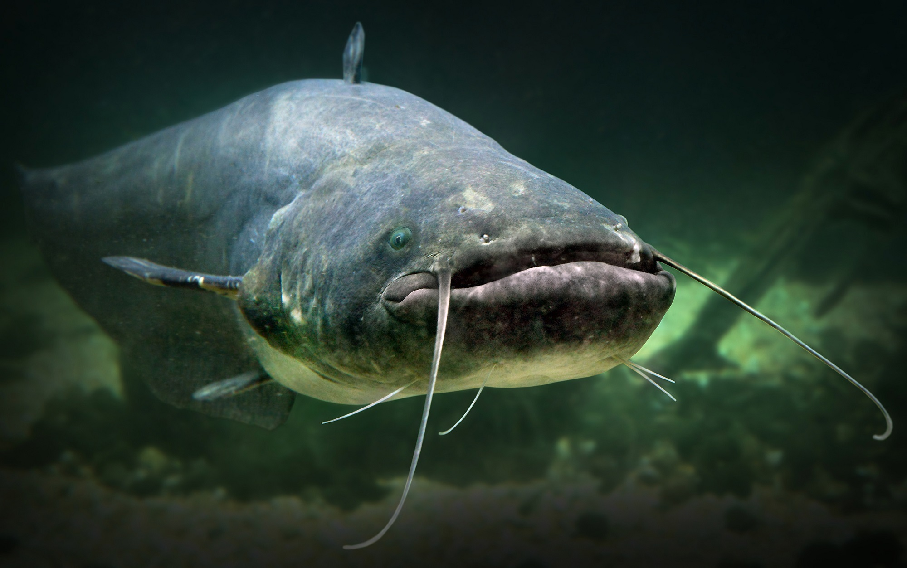
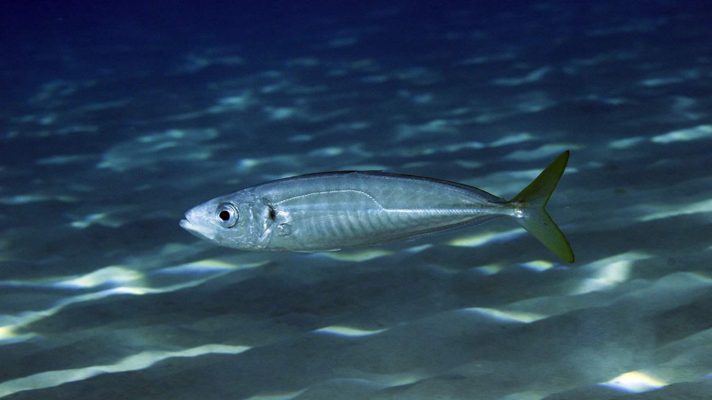
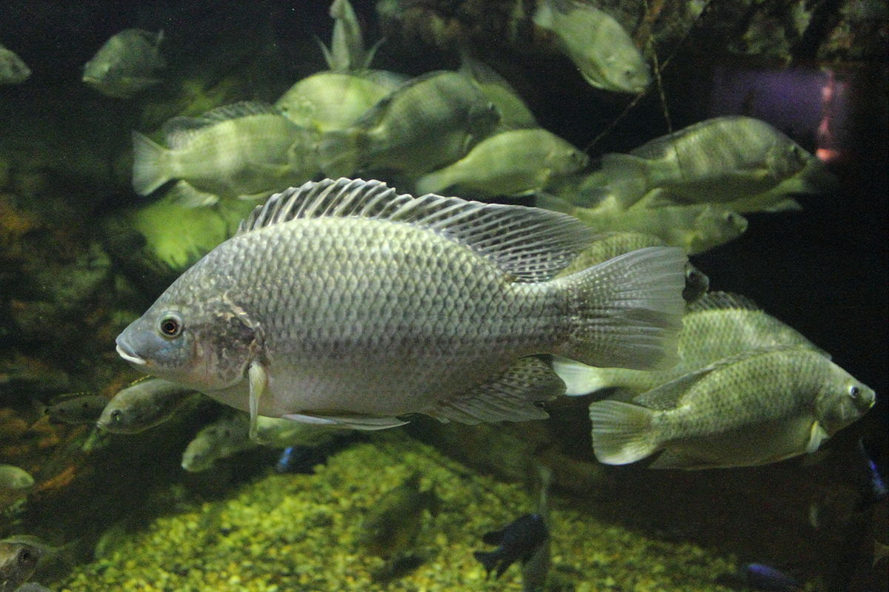
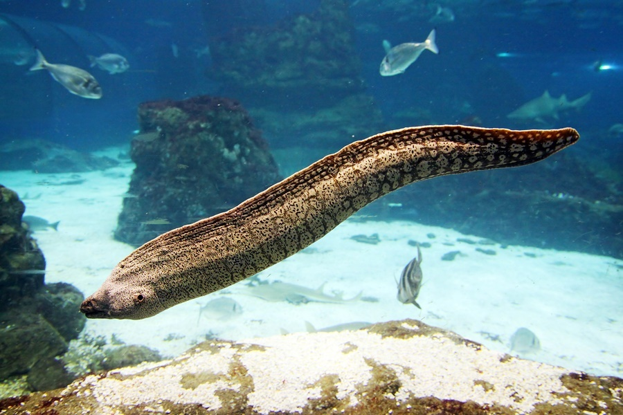
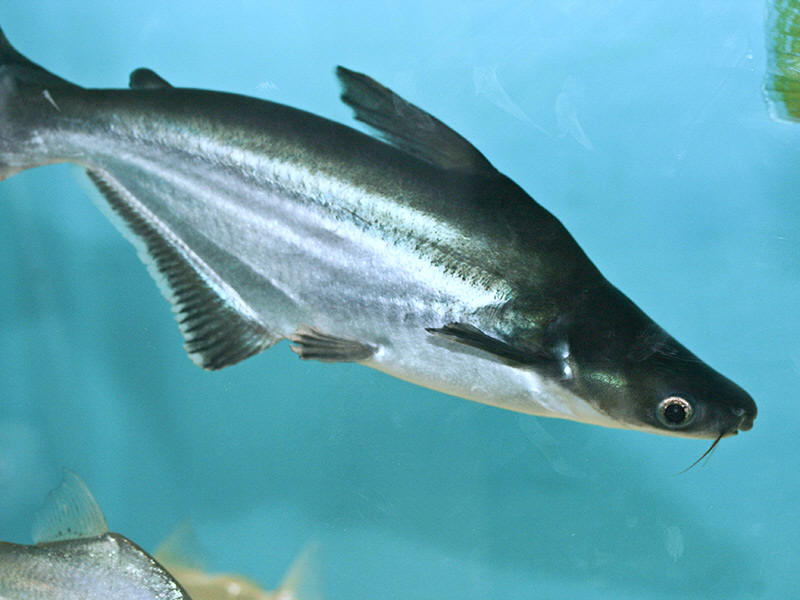
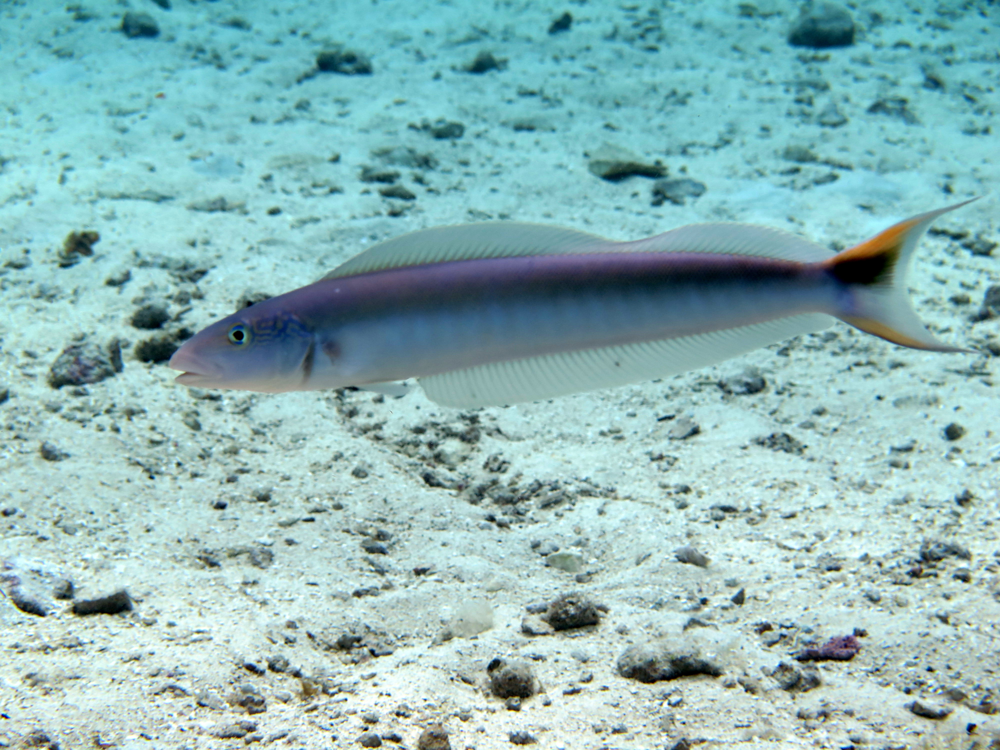
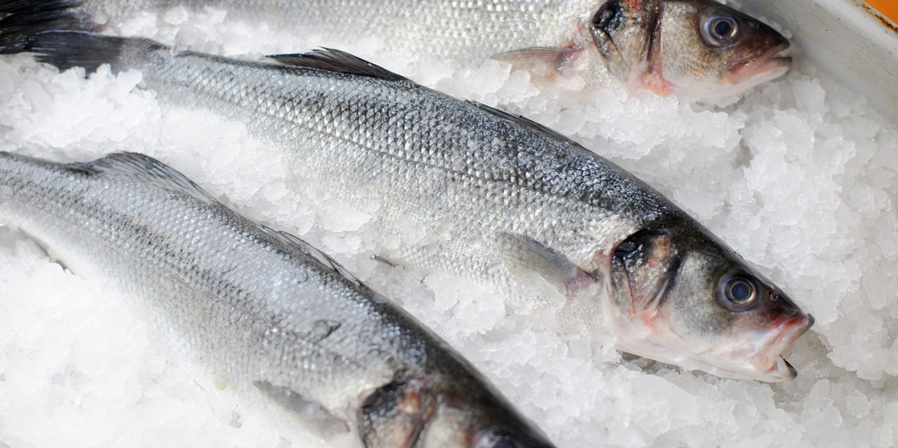
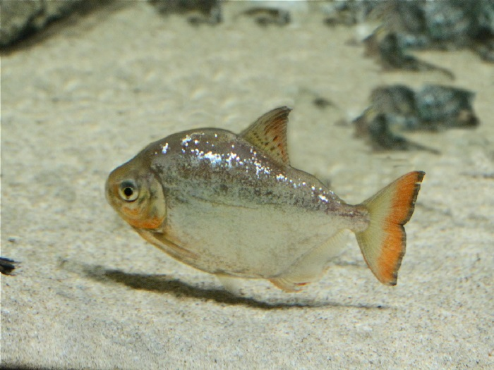
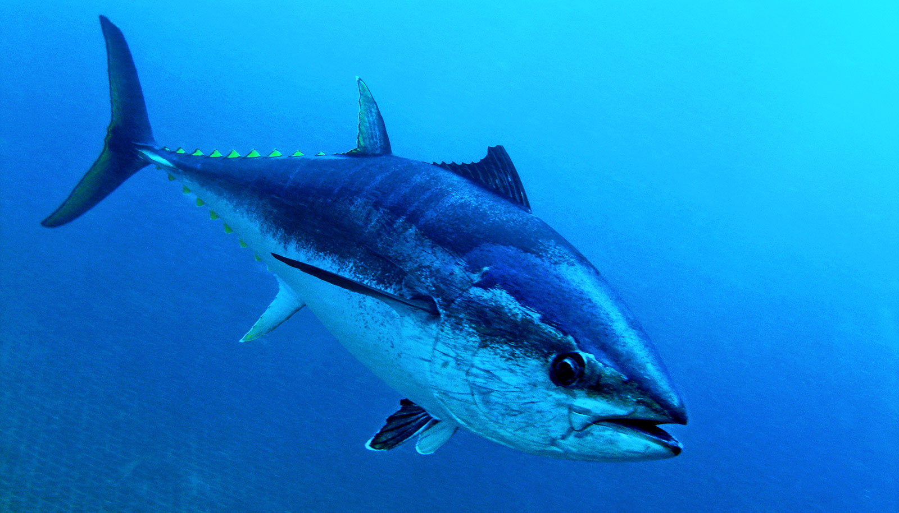

9 Kind Of Fish You Should Not Eat
We all know fish is so delicious & healthy, however there are certain fish that do more harm than good for your health. Here are 9 types of fish you should never eat.
9. Imported Catfish
Catfish can grow to considerable size to accelerate their growth, many fish farmers feed them with hormones, especially those fish which is imported from asian countries. Free grown catfish are much less dangerous & more nutritionally valuable.
8. Mackerel
mackerel contains mercury, which is not cleared from but accumulated in the body, causing various diseases. The atlantic mackerel is the least dangerous in this regard, so you can eat as much as you like.
7. tilapia
There aren't any healthy fatty acid in tilapia. yet the concentrations of harmful fats in it are almost as high as in lard. Excess consumption of this fish leads to increase in cholesterol levels & makes the body more sensitive to allergens. tilapia is not recommended for those who have heart diseases, asthma or arthritis.
6. Eel
Eel have lots of fat. & thus easily absorb industrial & farm waste in the water. American species have the highest level of such intoxication. European eels are also known for being contaminated with large amounts of mercury.
5. pangasius
pangasius fillet contains an elevated level of nitrofurazone & polyphosphate or carcinogens. This type of fish is not recommended for food.
4. Tilefish
This fish is the leader in mercury contamination & its often caught in breach of the rules, increasing the risk of food poisoning.
3. Sea bass
Sea bass contain an ample amount of mercury. sometimes, especially when it served as fillet, instead of sea bass, you get pangasius or some other cheaper fish.
2. Dollarfish
This fish commonly known as oilfish, contains gempylotoxin. A waxy substance that is not metabolized at all. The toxin doesn't do much harm, but it can cause indigestion. To reduce the level of gempylotoxin, you should grill or fry the fish. However, this food is not recommended for those who have digestive issues.
1. Tuna
Tuna contains lots of mercury, especially on blackfin & bluefin tuna. Additionally there is precious little free-grown tuna in the stores because it really get extinct. All the fish comes from farm where its fed with antibiotics & hormones.